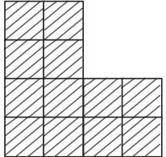
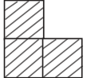
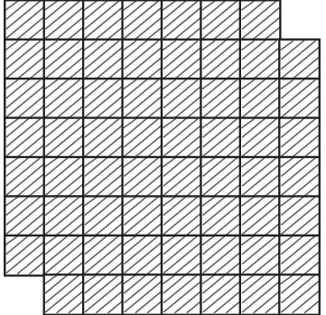
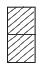
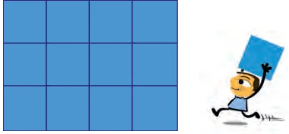
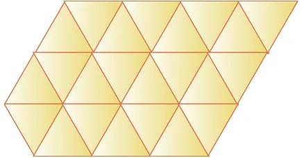
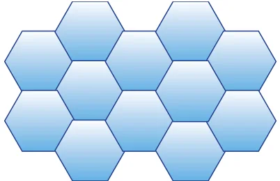
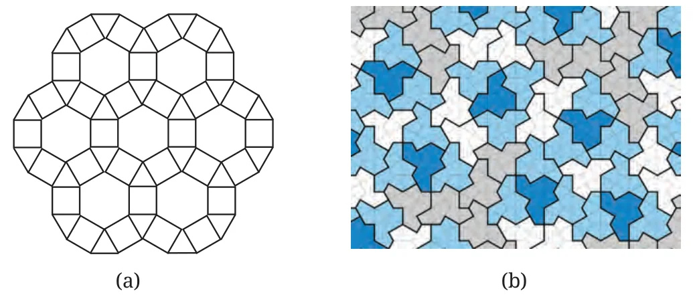
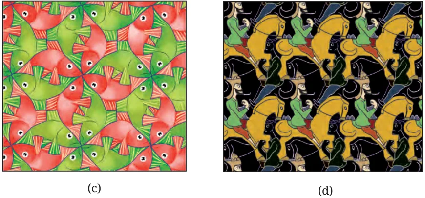
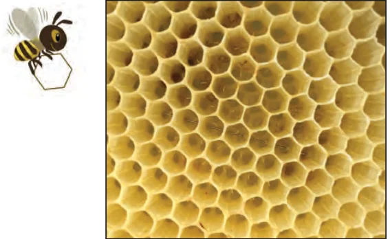

Are the following tilings possible?
1.
Region to be tiled

Tile

2.
Region to be tiled

Tile

Tiling the Entire Plane
So far we have seen how to tile a given region. What about tiling the entire plane?
Can you think of a shape whose copies can tile the entire plane? Clearly, squares can.

Are there other regular polygons that can tile the plane? What about equilateral triangles?

Tiling with equilateral triangles shows the possibility of tiling with another regular polygon. A plane can be tiled using regular hexagons as well.

A plane can also be tiled using more than one shape, and using non-regular polygons. People such as the great Dutch artist Escher (1898 – 1972) — whose works explored mathematical themes such as tiling — have come up with creative ways of tiling a plane with animal shapes! Here are some examples.


Mathematicians are still exploring various ways of tiling the plane! Tiling (b) was found as recently as 2023. Have you seen tilings in daily life? They are often used in buildings and in designs. Tilings are found in nature too. The front face of bee hives and some wasp nests are tiled using hexagonal cells!

These cells are used by the insects to keep their eggs, larvae and pupae safe, as well as to store food. Because the region is tiled, no space is wasted. Scientists still wonder how bees and wasps are able to make hexagonal cells. Next time you see any tiling, pay closer attention to it! Tiling is still one of the most exciting and active areas of research in geometry.